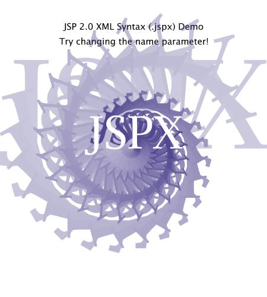

SVG has many potential uses, such as searchable images, or images customized with the name of your site's visitor (e.g. a "Susan's Store" tab image). JSPX is a natural fit for generating dynamic XML content such as SVG.
To execute this example you will need a browser with basic SVG support. Any remotely recent browser should have this.
The following is a screenshot of the resulting image, for those using a
browser without SVG support:
